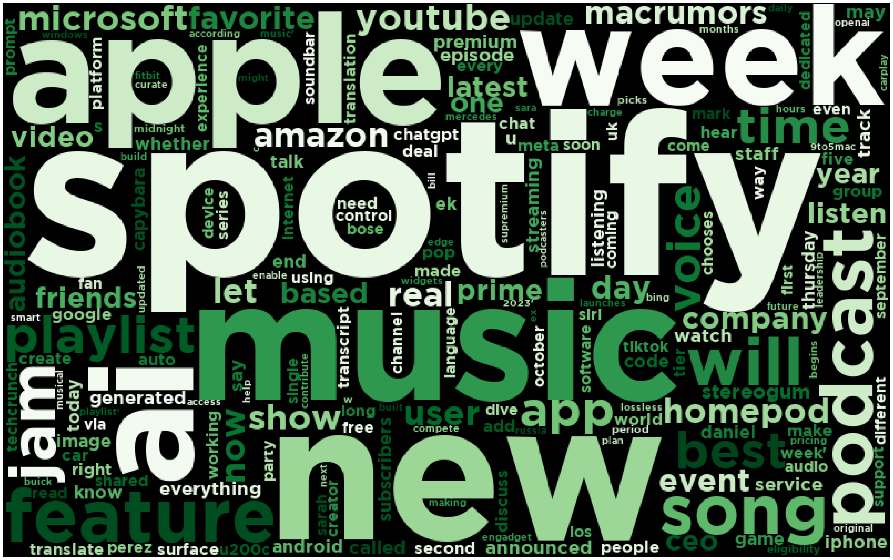
Data Exploration
Introduction
In this section, I delve into exploring the datasets I previously gathered and cleaned. Exploratory Data Analysis (EDA) is the crucial first step in the data analysis process, where we unravel the hidden stories and patterns within our datasets. It involves a comprehensive examination of data, employing various statistical and visualization techniques to understand its structure, relationships, and anomalies. EDA not only uncovers valuable insights but also serves as the foundation for informed decision-making in data-driven projects. I will work through each of the 6 datasets I gathered and cleaned from the previous Data Gathering and Data Cleaning tabs, applying different EDA methods using Matplotlib, Seaborn and Pandas.
General EDA Steps
I will walk through each of the below topics for my datasets, being sure to complete thorough and effective EDA.
Data Understanding: To effectively tackle our project’s objectives, we must first immerse ourselves in the dataset. We’ll explore its features, understand their data types, and investigate potential relationships that are crucial for our analysis.
Descriptive Statistics: Let’s start by quantifying the data’s central tendencies and spread for numerical variables, giving us insights into the dataset’s overall distribution. For categorical variables, we’ll create frequency distributions and visualizations to grasp their distribution patterns.
Data Visualization: We’ll harness the power of data visualization to make sense of complex data. Through histograms, scatter plots, and more, we’ll gain a visual perspective on data distribution, variable relationships, and potential trends.
Correlation Analysis: By scrutinizing correlations between variables, we’ll uncover valuable insights. Heatmaps and scatter plots will help us identify positive, negative, or negligible correlations, steering us towards deeper analyses.
Hypothesis Generation: Building on our initial observations, we’ll refine our hypotheses and research questions, ensuring they align with the emerging insights from the data.
Data Grouping and Segmentation: When applicable, we’ll divide the data into meaningful segments or groups. This approach allows us to explore specific subgroups, revealing insights that might not be apparent in the overall dataset.
Identifying Outliers: We’ll pay close attention to outliers, which can indicate data quality issues or hold intriguing stories within the dataset. Uncovering these anomalies is crucial to a comprehensive understanding of the data.
Data Meanings
Many of the datasets used contain audio features of songs/artists. Below I have defined what each column means and represents, so you can get a clearer understanding of further data analysis that is to come.
Duration The length of the song in milliseconds.
Popularity A 0-to-100 score that ranks how popular an artist/track is relative to other artists/tracks on Spotify.
Acousticness A confidence measure from 0.0 to 1.0 of whether the track is acoustic. 1.0 represents high confidence the track is acoustic.
Danceability Danceability describes how suitable a track is for dancing based on a combination of musical elements including tempo, rhythm stability, beat strength, and overall regularity. A value of 0.0 is least danceable and 1.0 is most danceable.
Energy Energy is a measure from 0.0 to 1.0 and represents a perceptual measure of intensity and activity. Typically, energetic tracks feel fast, loud, and noisy. For example, death metal has high energy, while a Bach prelude scores low on the scale. Perceptual features contributing to this attribute include dynamic range, perceived loudness, timbre, onset rate, and general entropy.
Instrumentalness Predicts whether a track contains no vocals. “Ooh” and “aah” sounds are treated as instrumental in this context. Rap or spoken word tracks are clearly “vocal”. The closer the instrumentalness value is to 1.0, the greater likelihood the track contains no vocal content. Values above 0.5 are intended to represent instrumental tracks, but confidence is higher as the value approaches 1.0.
Key The key the track is in. Integers map to pitches using standard Pitch Class notation. E.g. 0 = C, 1 = C♯/D♭, 2 = D, and so on. If no key was detected, the value is -1.
Liveness Detects the presence of an audience in the recording. Higher liveness values represent an increased probability that the track was performed live. A value above 0.8 provides strong likelihood that the track is live.
Loudness The overall loudness of a track in decibels (dB). Loudness values are averaged across the entire track and are useful for comparing relative loudness of tracks. Loudness is the quality of a sound that is the primary psychological correlate of physical strength (amplitude). Values typically range between -60 and 0 db.
Mode Mode indicates the modality (major or minor) of a track, the type of scale from which its melodic content is derived. Major is represented by 1 and minor is 0.
Speechiness Speechiness detects the presence of spoken words in a track. The more exclusively speech-like the recording (e.g. talk show, audio book, poetry), the closer to 1.0 the attribute value. Values above 0.66 describe tracks that are probably made entirely of spoken words. Values between 0.33 and 0.66 describe tracks that may contain both music and speech, either in sections or layered, including such cases as rap music. Values below 0.33 most likely represent music and other non-speech-like tracks.
Tempo The overall estimated tempo of a track in beats per minute (BPM). In musical terminology, tempo is the speed or pace of a given piece and derives directly from the average beat duration.
Valence A measure from 0.0 to 1.0 describing the musical positiveness conveyed by a track. Tracks with high valence sound more positive (e.g. happy, cheerful, euphoric), while tracks with low valence sound more negative (e.g. sad, depressed, angry).
News API
I’ve collected a rich dataset from the News API, focusing on articles related to Spotify. This dataset is a treasure trove of information about the latest developments, trends, and news surrounding the music streaming platform. To distill the essence of these articles, I decided to create a captivating word cloud. By analyzing the titles and descriptions of each article, this word cloud visually represents the most frequently occurring words, offering a quick and insightful glimpse into the key themes and topics that dominate the Spotify news landscape. It’s a fascinating way to showcase the highlights and trending subjects within this dynamic and ever-evolving industry.
The generated Spotify-themed word cloud below provides a visually captivating snapshot of the key themes and topics present in the collected articles. As expected, the word ‘Spotify’ takes center stage, reaffirming its central role in the context of these articles. The prominence of terms like ‘music,’ ‘new,’ and ‘AI’ suggests that the articles likely revolve around discussions regarding innovative developments, trends, and technologies in the music industry. The word ‘week’ may indicate a focus on weekly updates or happenings within Spotify, while ‘Apple’ hints at possible comparisons or interactions between the two major players in the music streaming industry.
Overall, this word cloud offers a quick and engaging overview of the most significant terms within the dataset, providing a valuable starting point for understanding the core topics and trends in Spotify-related news.
Electronic Dance Music Subgenres
Data Understanding
artist_name object
danceability float64
energy float64
key float64
loudness float64
mode float64
speechiness float64
acousticness float64
instrumentalness float64
liveness float64
valence float64
tempo float64
duration_mins float64
time_signature float64
genre object
dtype: object(20607, 15)Descriptive Statistics
Below are the descriptive statistics of the dataset. As this dataset is a combination of 5 edm subgenres, it would be interesting to compare these statistics across the genres.
| count | mean | std | min | 25% | 50% | 75% | max | |
|---|---|---|---|---|---|---|---|---|
| danceability | 20607.0 | 0.645416 | 0.142001 | 0.000000 | 0.552000 | 0.658000 | 0.761000 | 0.989000 |
| energy | 20607.0 | 0.822341 | 0.151667 | 0.001370 | 0.744000 | 0.866000 | 0.938000 | 1.000000 |
| key | 20607.0 | 5.569224 | 3.637224 | 0.000000 | 2.000000 | 6.000000 | 9.000000 | 11.000000 |
| loudness | 20607.0 | -6.171249 | 3.191303 | -38.474000 | -7.951000 | -6.032000 | -4.057500 | 2.335000 |
| mode | 20607.0 | 0.526617 | 0.499303 | 0.000000 | 0.000000 | 1.000000 | 1.000000 | 1.000000 |
| speechiness | 20607.0 | 0.093484 | 0.090122 | 0.000000 | 0.045600 | 0.060400 | 0.096300 | 0.959000 |
| acousticness | 20607.0 | 0.040806 | 0.118974 | 0.000001 | 0.000760 | 0.004120 | 0.022100 | 0.995000 |
| instrumentalness | 20607.0 | 0.450730 | 0.373322 | 0.000000 | 0.019550 | 0.489000 | 0.840000 | 0.995000 |
| liveness | 20607.0 | 0.195688 | 0.172525 | 0.007020 | 0.085600 | 0.119000 | 0.262000 | 0.988000 |
| valence | 20607.0 | 0.350837 | 0.233250 | 0.000000 | 0.158000 | 0.311000 | 0.512000 | 0.983000 |
| tempo | 20607.0 | 132.703367 | 21.461315 | 0.000000 | 124.991000 | 128.022000 | 139.978500 | 248.001000 |
| duration_mins | 20607.0 | 4.956840 | 2.197097 | 0.160883 | 3.504317 | 4.470033 | 6.237517 | 82.463883 |
| time_signature | 20607.0 | 3.975300 | 0.241966 | 0.000000 | 4.000000 | 4.000000 | 4.000000 | 5.000000 |
I noticed, as seen below, that my data is not balanced by genre. I decided to balance each genre by lowering each value count to match the minority class (‘techno’). After balancing, each genre contains 820 rows of data.
Before balancing:genre
trance 4367
tech house 4362
techno 4234
drum and bass 3858
dubstep 3786
Name: count, dtype: int64After balancing:genre
trance 3786
tech house 3786
techno 3786
drum and bass 3786
dubstep 3786
Name: count, dtype: int64Shape of dataset after balancing genres: (18930, 15)Data Visualizations
I’ve created several visualizations to examine the differences in the edm subgenres and see what appears to be identifying traits.
This graph shows the duration of songs per genre. It is evident there are outliers in the dataset (songs over 12 minutes), that may represent long mixes or full dj sets. Overall, it appears that most of the songs are less than 10 minutes long, with techno having more likelihood for longer songs.
[Text(0.5, 1.0, 'Duration of Songs by Genre')]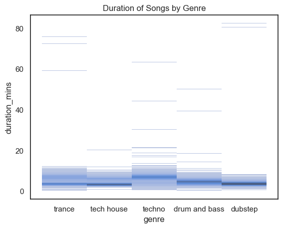
The below density plots show the ditribution of loudness by genre. Tech-house takes the cake with the highest loudness density.
/Users/schenfeldp/opt/anaconda3/lib/python3.8/site-packages/seaborn/axisgrid.py:118: UserWarning: The figure layout has changed to tight
self._figure.tight_layout(*args, **kwargs)Text(0.5, 0.98, 'Distribution of Loudness by Genre')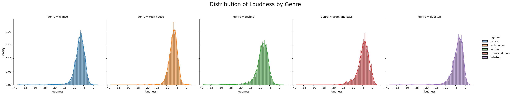
Below is a density plot showing the different distributions of tempo for each genre. Most distinctly, drum and bass along with dubstep have the most differing tempo compared to the other genres. Tech-house seems to have a distinct tempo range, with a mean around 125.
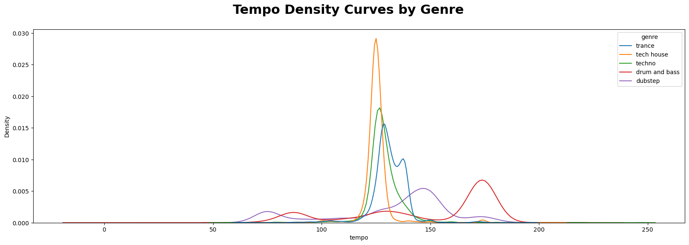
The boxplot below showing the distribution of daceability for each genre, demonstrates that the most ‘danceable’ genres are tech-house and techno.
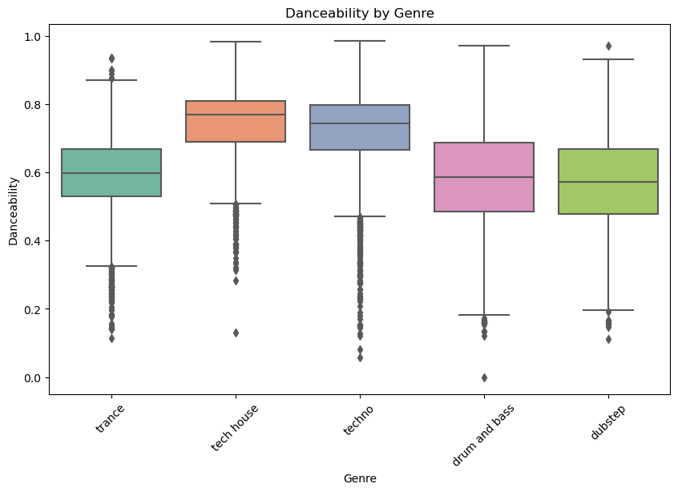
Correlation Analysis
The highest correlation from this matrix seems to be ‘loudness’ and ‘energy’ with a correlation of .59. Additionally, the most negatively correlated columns are ‘energy’ and ‘acousticness’, which would make sense because acoustic versions of songs are typically lower in energy.
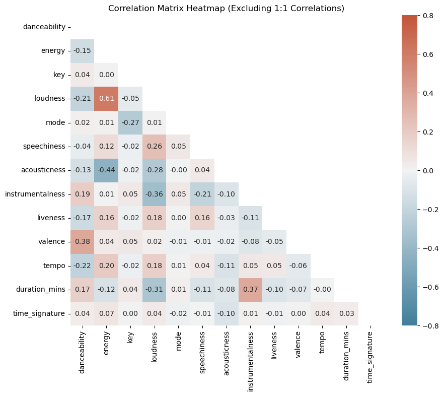
Hypothesis Generation
- Can we predict edm subgenres using machine learning?
Spotify User Behavior
Understanding the Data
Below are definitions of the columns in this dataset.
Age - Age group of user
Gender - Gender of user
spotify_usage_period - How long have you been using Spotify?
spotify_listening_device - Which of the following devices do you primarily use to listen to Spotify?
spotify_subscription_plan - Which Spotify subscription plan do you currently have?
premium_sub_willingness - Are you willing to take a premium subscription or willing to continue with premium subscription in future?
preffered_premium_plan - If premium or willing to take premium, what amount do you pay for the subscription?
preferred_listening_content - What do you prefer to listen more?
fav_music_genre - What genre(s) of music do you enjoy the most?
music_time_slot - What is your favourite time slot to listen to music?
music_Influencial_mood - When it comes to listening to music, which of the following moods or situations most strongly influences your choice of music?
music_lis_frequency - When do you listen to music more often?
music_expl_method - How do you discover new music on Spotify?
music_recc_rating - How do you rate the spotify music recommendations from 1-5?
pod_lis_frequency - How often do you listen to Podcast?
fav_pod_genre - What genre(s) of Podcast do you enjoy the most?
preffered_pod_format - What podcast format you generally prefer?
pod_host_preference - Are you more inclined to listen to podcasts from unknown personalities, or do you prefer podcasts hosted by well-known individuals?
preffered_pod_duration - Do you prefer shorter podcast episodes (under 30 minutes) or longer episodes (over 30 minutes)
pod_variety_satisfaction - Are you satisfied with the variety and availability of podcasts on Spotify?
age object
gender object
spotify_usage_period object
spotify_listening_device object
spotify_subscription_plan object
premium_sub_willingness object
preferred_premium_plan object
preferred_listening_content object
fav_music_genre object
music_time_slot object
music_influential_mood object
music_lis_frequency object
music_expl_method object
music_rec_rating int64
pod_lis_frequency object
fav_pod_genre object
preferred_pod_format object
pod_host_preference object
preferred_pod_duration object
pod_variety_satisfaction object
dtype: objectDescriptive Statistics
We only have one numerical variable in our dataset so the below table shows the statistics for that column. It appears that the average rating for the Spotify recommendation system is 3.5 out of 5, which I would say is a favorable score overall.
| count | mean | std | min | 25% | 50% | 75% | max | |
|---|---|---|---|---|---|---|---|---|
| music_rec_rating | 520.0 | 3.503846 | 0.979552 | 1.0 | 3.0 | 3.5 | 4.0 | 5.0 |
Data Visualizations
Below is a graph showing the distribution of gender within the dataset. Within the 520 rows, there are over 350 responses from females, and only around 100 from males. The data is heavily skewed towards women.
[Text(0.5, 1.0, 'Count of Gender')]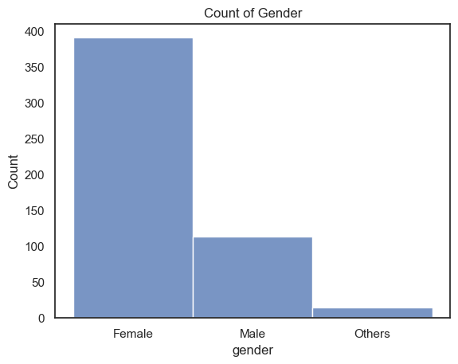
Here we can see that the dataset is mostly comprised of users within the age range of 20-35. It is intuitive that there would be little to no users between the ages of 6-12 and over 60 years old. Although this dataset only contains 520 rows, I would believe it is likely that in general 20-35 is the most active age group on the platform.
[Text(0.5, 1.0, 'Distribution of Age Ranges')]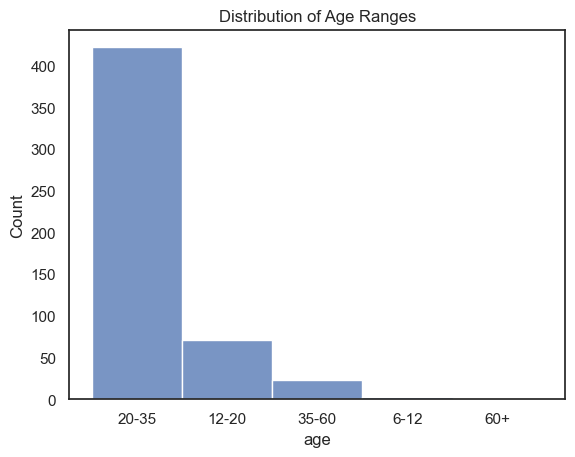
This pie chart shows the breakdown of how long the users in this dataset have been using Spotify. It is a good sign that most users have been on the platform for more than 2 years. This shows great retention rate.
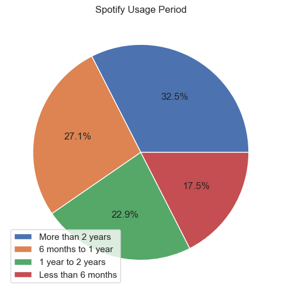
From the below pie chart, it is evident that there is a lack of podcast listening within these group of listeners. The frequenices of ‘Never’ and ’Rarely make up 63.7% of the data! This could potentially be a good opportunity for Spotify to work on its reach of podcast listeners.
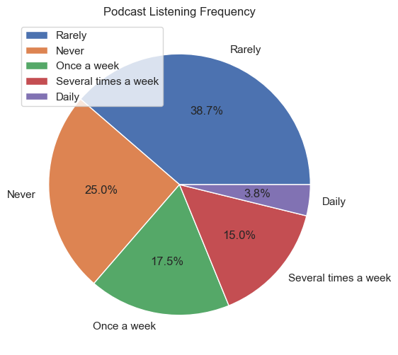
This horizantal bar chart shows the distribution of what the favorite podcast genres are. Comedy and Lifestyle/Health are the top 2 most popular genres. Marketing these podcasts towards users could increase podcast listening rates.
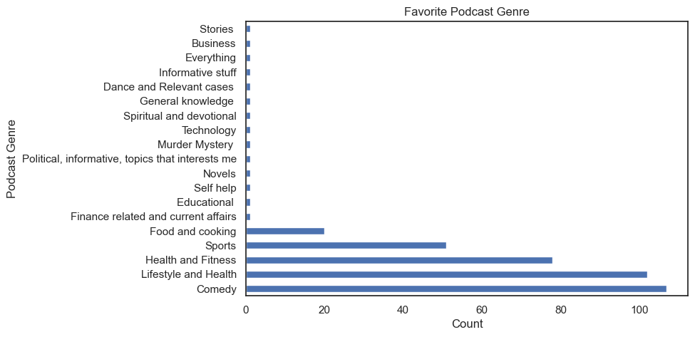
Correlation Analysis
Due to not having numeric values in this dataset, I did not create a correlation matrix. However, the graphs below may indicate some correlation between variables.
This graph shows the distribution of favorite genres and what time slot they are most preferred for listening. The ‘Melody’ genre is most preferred to be listened at night, as well as the ‘Pop’ genre. The time of day may affect what genre is listened to.
[Text(0.5, 1.0, 'Which Genre is Most Preferred at What Time Slot')]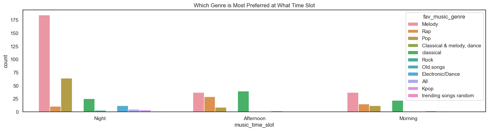
This histogram shows a user’s willigness to change to a premium plan according to their age group. While we already know the age range of 20-35 is most abundant in this dataset, it is also evident they are more likely to switch to premium.
[Text(0.5, 1.0, 'Willingness to Change to Premium According to Age Group')]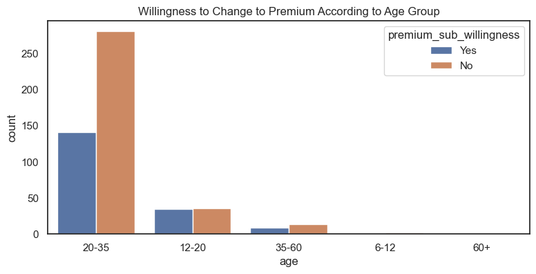
Hypothesis Generation
Based on my EDA, I would refine my research questions to the following:
- Which Premium plan is preferred by users, and does it vary by age or music preferences?
- How can Spotify tailor its marketing and content strategy to better cater to the preferences and behavior of different user segments?
- Can personalized music or podcast recommendations be generated based on user preferences and behavior?